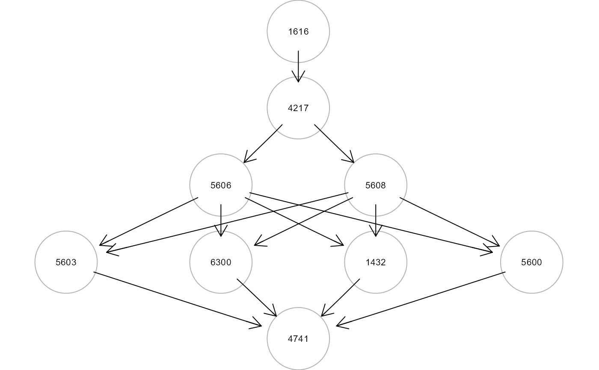

This function uses SEMace to find
significant causal effects between source-sink pairs and
SEMpath to fit them and test their edge
perturbation.
pathFinder(
graph,
data,
group = NULL,
ace = NULL,
path = "directed",
method = "none",
alpha = 0.05,
verbose = FALSE,
...
)Arguments
- graph
Input network as an igraph object.
- data
A matrix or data.frame. Rows correspond to subjects, and columns to graph nodes (variables).
- group
group A binary vector. This vector must be as long as the number of subjects. Each vector element must be 1 for cases and 0 for control subjects. Group specification enables edge perturbation testing. By default,
group = NULL.- ace
A data.frame generated by
SEMace. If NULL,SEMacewill be automatically run.- path
If
path = "directed", all directed paths between the two nodes will be included in the fitted model. Ifpath = "shortest", only shortest paths will be considered.- method
Multiple testing correction method. One of the values available in
p.adjust. By default,method = "none"(i.e., no multiple test correction).- alpha
Significance level for ACE selection (by default,
alpha = 0.05).- verbose
Show the significant directed (or shortest) paths inside the input graph.
- ...
Currently ignored.
Value
A list of 3 objects:
"paths", list of paths as igraph objects;
"fit", fitting results for each path as a lavaan object;
"dfp", a data.frame containing SEM global fitting statistics.
Examples
# \donttest{
# Find and evaluate significantly perturbed paths
library(huge)
als.npn <- huge.npn(alsData$exprs)
#> Conducting the nonparanormal (npn) transformation via shrunkun ECDF....done.
adjData <- SEMbap(graph = alsData$graph, data = als.npn)$data
#> d-separation test (basis set) of 420 edges...
#>
/ 0 % elapsed=00s
- 1 % elapsed=00s, remaining~01s
\ 2 % elapsed=00s, remaining~00s
| 4 % elapsed=00s, remaining~01s
/ 5 % elapsed=00s, remaining~01s
- 6 % elapsed=00s, remaining~01s
\ 7 % elapsed=00s, remaining~01s
| 8 % elapsed=00s, remaining~01s
/ 10% elapsed=00s, remaining~01s
- 11% elapsed=00s, remaining~01s
\ 12% elapsed=00s, remaining~01s
| 13% elapsed=00s, remaining~01s
/ 14% elapsed=00s, remaining~01s
- 15% elapsed=00s, remaining~01s
\ 17% elapsed=00s, remaining~01s
| 18% elapsed=00s, remaining~01s
/ 19% elapsed=00s, remaining~01s
- 20% elapsed=00s, remaining~01s
\ 21% elapsed=00s, remaining~01s
| 23% elapsed=00s, remaining~01s
/ 24% elapsed=00s, remaining~01s
- 25% elapsed=00s, remaining~01s
\ 26% elapsed=00s, remaining~01s
| 27% elapsed=00s, remaining~01s
/ 29% elapsed=00s, remaining~01s
- 30% elapsed=00s, remaining~01s
\ 31% elapsed=00s, remaining~01s
| 32% elapsed=00s, remaining~01s
/ 33% elapsed=00s, remaining~01s
- 35% elapsed=00s, remaining~01s
\ 36% elapsed=00s, remaining~01s
| 37% elapsed=00s, remaining~01s
/ 38% elapsed=00s, remaining~01s
- 39% elapsed=00s, remaining~01s
\ 40% elapsed=00s, remaining~01s
| 42% elapsed=00s, remaining~01s
/ 43% elapsed=00s, remaining~01s
- 44% elapsed=00s, remaining~01s
\ 45% elapsed=00s, remaining~01s
| 46% elapsed=00s, remaining~01s
/ 48% elapsed=00s, remaining~00s
- 49% elapsed=00s, remaining~00s
\ 50% elapsed=00s, remaining~00s
| 51% elapsed=00s, remaining~00s
/ 52% elapsed=00s, remaining~00s
- 54% elapsed=00s, remaining~00s
\ 55% elapsed=01s, remaining~00s
| 56% elapsed=01s, remaining~00s
/ 57% elapsed=01s, remaining~00s
- 58% elapsed=01s, remaining~00s
\ 60% elapsed=01s, remaining~00s
| 61% elapsed=01s, remaining~00s
/ 62% elapsed=01s, remaining~00s
- 63% elapsed=01s, remaining~00s
\ 64% elapsed=01s, remaining~00s
| 65% elapsed=01s, remaining~00s
/ 67% elapsed=01s, remaining~00s
- 68% elapsed=01s, remaining~00s
\ 69% elapsed=01s, remaining~00s
| 70% elapsed=01s, remaining~00s
/ 71% elapsed=01s, remaining~00s
- 73% elapsed=01s, remaining~00s
\ 74% elapsed=01s, remaining~00s
| 75% elapsed=01s, remaining~00s
/ 76% elapsed=01s, remaining~00s
- 77% elapsed=01s, remaining~00s
\ 79% elapsed=01s, remaining~00s
| 80% elapsed=01s, remaining~00s
/ 81% elapsed=01s, remaining~00s
- 82% elapsed=01s, remaining~00s
\ 83% elapsed=01s, remaining~00s
| 85% elapsed=01s, remaining~00s
/ 86% elapsed=01s, remaining~00s
- 87% elapsed=01s, remaining~00s
\ 88% elapsed=01s, remaining~00s
| 89% elapsed=01s, remaining~00s
/ 90% elapsed=01s, remaining~00s
- 92% elapsed=01s, remaining~00s
\ 93% elapsed=01s, remaining~00s
| 94% elapsed=01s, remaining~00s
/ 95% elapsed=01s, remaining~00s
- 96% elapsed=01s, remaining~00s
\ 98% elapsed=01s, remaining~00s
| 99% elapsed=01s, remaining~00s
/ 100% elapsed=01s, remaining~00s
#> Number of significant local tests: 220 / 420
#>
ace <- SEMace(graph = alsData$graph, data = adjData,
group = alsData$group)
#>
#> Frequency distribution of path length from X to Y :
#> 1 2 3 4 5
#> 12 1 3 1 6
#>
#>
ACE 1 of 23
ACE 2 of 23
ACE 3 of 23
ACE 4 of 23
ACE 5 of 23
ACE 6 of 23
ACE 7 of 23
ACE 8 of 23
ACE 9 of 23
ACE 10 of 23
ACE 11 of 23
ACE 12 of 23
ACE 13 of 23
ACE 14 of 23
ACE 15 of 23
ACE 16 of 23
ACE 17 of 23
ACE 18 of 23
ACE 19 of 23
ACE 20 of 23
ACE 21 of 23
ACE 22 of 23
ACE 23 of 23
ace <- ace[order(ace$pvalue),]
print(ace)
#> sink op source d_est d_se d_z pvalue d_lower d_upper
#> 9 5534 <- 6647 0.723 0.199 3.633 0.000 0.333 1.112
#> 14 836 <- 317 -0.524 0.168 -3.120 0.002 -0.853 -0.195
#> 21 4747 <- 5630 0.523 0.201 2.595 0.009 0.128 0.918
#> 19 4741 <- 7133 0.786 0.315 2.498 0.012 0.169 1.403
#> 4 4747 <- 6647 0.376 0.162 2.312 0.021 0.057 0.694
#> 6 5530 <- 6647 -0.360 0.174 -2.063 0.039 -0.702 -0.018
#> 7 5532 <- 6647 0.369 0.181 2.035 0.042 0.014 0.724
paths <- pathFinder(graph = alsData$graph, data = adjData,
group = alsData$group,
ace = ace)
#>
#> Found 7 significant ACEs.
#>
#> pathId sink op source N.nodes N.edges dev_df srmr pv.act pv.inh
#> 1 P14 836 <- 317 3 2 0.182 0.010 0.001450 0.678200
#> 2 P19 4741 <- 7133 10 16 2.768 0.081 0.000002 0.000817
head(parameterEstimates(paths$fit$P19))
#> lhs op rhs est se z pvalue ci.lower ci.upper
#> 1 z317 ~ group 0.201 0.077 2.590 0.010 0.049 0.352
#> 2 z836 ~ group 0.200 0.078 2.575 0.010 0.048 0.352
#> 3 z842 ~ group -0.087 0.080 -1.092 0.275 -0.245 0.070
#> 4 z836 ~ z842 0.062 0.078 0.804 0.422 -0.090 0.214
#> 5 z842 ~ z317 0.101 0.080 1.265 0.206 -0.056 0.258
#> 6 z317 ~~ z317 0.954 0.107 8.944 0.000 0.745 1.163
gplot(paths$paths$P19)

path19 <- SEMpath(graph = alsData$graph, data = adjData,
group = alsData$group,
from = "7133",
to = "4747",
path = "directed",
verbose = TRUE)
 #> Path: 7133 -> 4747 size- 10 16 --
#>
#> NLMINB solver ended normally after 6 iterations
#>
#> deviance/df: 2.607828 srmr: 0.07847444
#>
#> Brown's combined P-value of node activation: 0.3594458
#>
#> Brown's combined P-value of node inhibition: 0.0005751165
#>
# }
#> Path: 7133 -> 4747 size- 10 16 --
#>
#> NLMINB solver ended normally after 6 iterations
#>
#> deviance/df: 2.607828 srmr: 0.07847444
#>
#> Brown's combined P-value of node activation: 0.3594458
#>
#> Brown's combined P-value of node inhibition: 0.0005751165
#>
# }